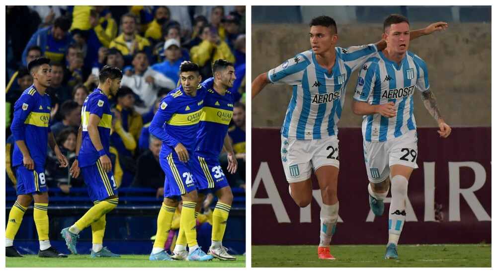

Asi se viene peleando la punta en la Primera Argentina
Racing vs River, Boca vs Independiente y Patronato vs Huracán definirán este domingo al campeón de la Liga Profesional de Fútbol. Los tres partidos que tienen como protagonistas a los Xeneizes (51), La Academia (50 puntos) y el Globo (47) ya tienen designados a los árbitros para la definición del campeonato.
| POS | EQUIPO | PTS. | PJ | PG | PE | PP | GF | GC | DIF |
|---|---|---|---|---|---|---|---|---|---|
| 1 | BOCA | 51 | 26 | 16 | 3 | 7 | 32 | 25 | 6 |
| 2 | RACING | 50 | 26 | 14 | 8 | 4 | 40 | 22 | 18 |
| 3 | HURACAN | 47 | 26 | 12 | 11 | 3 | 33 | 18 | 15 |
| 4 | ATL.TUCUMAN | 46 | 26 | 12 | 10 | 4 | 31 | 19 | 12 |
| 5 | RIVER PLATE | 44 | 26 | 13 | 5 | 8 | 41 | 21 | 20 |